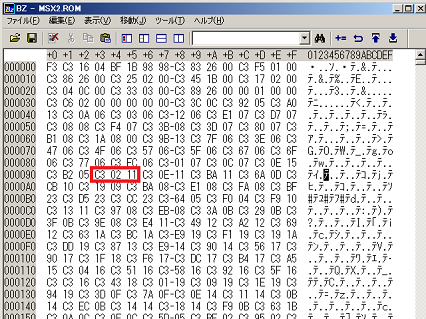
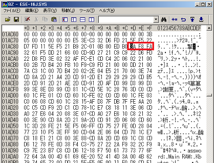

1chip MSXの秘密
M.A.D.さんで1chip MSX互換機が販売されていることもあり、なんとなくオリジナルの1chip MSXをいじっていました。隠し機能としてBIOSロード機能があるという噂を聞いたので、簡単に検証してみました。
■1chip MSXでのやり方（要1chip MSX、似非SCC(もしくはMega Flash ROM SCC等)、適当な？ゲーム）
噂ではSDカードの先頭にMSXDOS2.ROM(64kB), MSX2.ROM(32kB), MSX2EXT.ROM(16kB), FMBIOS.ROM(16kB)の順に一つのファイルにまとめておく必要があるようです。具体的な手順としては・・・
ROMの抜き出し
・MSXDOS2.ROM(64kB)
1 chip MSX付属の"MSXDOS2.SYS"と"COMMAND2.COM"、似非シリーズで使う"KSAVER.COM"を入れたSDカードを1ChipMSXのSDスロットに入れて起動、そこで"KSAVER.COM"を実行してMSXDOS2のROMをセーブします。
A>KSAVER MSXDOS2.ROM
もちろん、1chip MSXのDIP SWの5番がONになっている必要があります。ここ以降でも同じですが、"Wrong version of MSX-DOS"と表示される場合は、以下の設定を行いましょう。
A>SET EXPERT=ON
・MSX2.ROM(32kB), MSX2EXT.ROM(16kB)
fMSX98/AT versinon 1.1f test 2(96/09/11更新)に入っている"MAKEROM.BAS"を1chip MSX上で実行します。
・FMBIOS.ROM(16kB)
何故か"MAKEROM.BAS"では保存出来ないので、にがさん作の"NSSAVE.COM"で保存します。オプションは/S88で大丈夫だと思います。
A>NSSAVE FMBIOS.ROM /S88
BIOSファイルの作成
ここまでで用意したROMを一つにします。例えば"ESE-16J.SYS"という名前のファイルにCOPYコマンドでまとめる場合はこのようにします。ファイル名は適当で大丈夫です。
A:>COPY /B MSXDOS2.ROM + MSX2.ROM + MSX2EXT.ROM + FMBIOS.ROM ESE-16J.SYS
これをそのまま書いて読み込めたとしても動作に差が無いので検証になりませんね・・・ということでとりあえずバイナリエディタを使い、10093hをC3 02 11からC3 00 D0に変えてみましょう。

これが何を意味しているかというと、MAIN ROMの0093hを書き換えてD000hに飛ぶようにしています。勘の良い人はお分かりかと思いますが、TINY野郎さんのMSXのサウンドをSCCで鳴らしてみようを1chip MSXでやってみることにしました。例えばF750hを使いたい時は、C3 50 F7にします。
音源の作成
TINY野郎さんの記事ではMega Flash ROM SCCを使うことになっていますが、似非レンジャー（似非RAM公開当時、似非シリーズを作っていた人達の総称、ちなみに1chip MSXも似非MSXシステム3と呼ばれていました）の端くれとしては似非SCCを使わざるを得ません(笑)。Mega Flash ROM SCCをお使いの方は、TINY野郎さんの記事通りに作ってください。似非SCCの場合、SCCBOOT.ROMが8kB未満なので、まずバイナリエディタ等で後ろにFFhを追加して8kB(8192バイト)にします。次ににがさん作のNSLOAD.COMで似非SCCに書き込みます。
A>NSLOAD SCCBOOT.ROM /Sx
/Sxのxは似非SCCを挿しているスロット番号になります。
1chip MSXでの実行
スロット１に似非SCC(もしくはMega Flash SCC等)、スロット２に市販ゲームのROMを入れて、SHIFTを押しながら1chip MSXを起動します。
自動的にNandemoSCCが立ち上がるので、[3]を押して、プリセット２を反映させてください。
スペースを押してゲームを起動してください。
うまく動かない場合、PRG ADDRを変えながら、色々と試すことになりますが、当然BIOSファイルをそれに合わせて書き換えておく必要があります。例えばPRG ADDRとしてF750を使いたいときは10093hをC3 02 11からC3 50 F7にします。
メガロムゲーム等で、うまくPSG音がSCC音になれば、BIOSの読み込みが出来ている証拠です。（とはいえ、ドラクエ２のタイトルなんかはBIOS書き換えしなくてもSCC鳴るようですが）
■1chip MSX改でのやり方（要1chip MSX改、適当な？ゲーム）
HRA!さんが公開されている1chip MSX改ではさらにSDカードからのBIOS読み込みに機能が追加されていて、SLOT#0-1とSLOT#0-3にもデータも入れられるようになっているそうです。また、DIP SWの3番でSLOT1に、7-8番でSLOT2に似非SCCを割り当てるという設定があります。ただ、そのやり方については明確な資料が無いのですが、とりあえずHRA!さんのメモを参考にするとオリジナルの1chip MSXでは680000からMegaSD(MSXDOS2.ROM), MainROM, SubROM, FM-BIOS, KanjiROMと並んでいるようです。1chip MSX改ではアドレスは若干違いますが、途中までの並びは同じで最後にSLOT#0-1とSLOT#0-3を64kBずつ入れるようです。
ROMの抜き出し
・MSXDOS2.ROM(64kB)
1chipMSX付属の"MSXDOS2.SYS"と"COMMAND2.COM"、似非シリーズで使う"KSAVER.COM"を入れたSDカードを1ChipMSX改のSDスロットに入れて起動、そこで"KSAVER.COM"を実行してMSXDOS2のROMをセーブします。
A>KSAVER MSXDOS2.ROM
もちろん、1chip MSX改のDIP SWの5番がONになっている必要があります。ここ以降でも同じですが、"Wrong version of MSX-DOS"と表示される場合は、以下の設定を行いましょう。
A>SET EXPERT=ON
・MSX2P.ROM(32kB), MSX2PEXT.ROM(16kB), KANJI.ROM(128kB)
1chip MSX改上では"MAKEROM.BAS"が正常に動作しません。実機のMSX2またはMSX2+上で実行して作るしか無いようです。ここではせっかくなのでMSX2+でやってみました。FS-A1WXで実行した場合、KANJI.ROMは第二水準まで入った256kBのものが出来てしまいますが、第二水準は使えないので、とりあえずバイナリエディタ等で後半の128kBを削除してください。FMBIOS.ROMもこのプログラムで作られますが、中身がおかしいので、後述の方法で作ってください。
・FMBIOS.ROM(16kB)
何故か"MAKEROM.BAS"では保存出来ないので、にがさん作の"NSSAVE.COM"で保存します。オプションは/S88で大丈夫だと思います。
A>NSSAVE FMBIOS.ROM /S88
・KNJDRV2.ROM(64kB)(Slot0-1用）
ROM自体は前述の"MAKEROM.BAS"にて作られている"KNJDRV.ROM"(漢字BASIC内蔵機種でしか作れません)になりますが、64kBのサイズにしなければならないようです。まず、バイナリエディタ等を使い00hで埋め尽くされた64kBのファイルを予め作っておくと良いでしょう。00hで埋め尽くされた64kBのファイルを開き、別途"KNJDRV.ROM"を開いてすべてを選択してコピー、00hで埋め尽くされたファイルの4000hに貼り付けます。その後、ファイル名を"KNJDRV2.ROM"等の名前で保存します。
・SCCBOOT2.ROM(64kB)(Slot0-3用)
次に、SLOT0-3用のROMとして"SCCBOOT.ROM"を作ります。ROM自体はTINY野郎さんのデータそのものですが、やはりこれも64kBにしなければなりません。漢字BASICの時と同じく00hで埋め尽くされた64kBのファイルの4000hに上書きして"SCCBOOT2.ROM"等の名前で保存します。
BIOSファイルの作成
ここまでで用意したROMを一つにします。例えば"ESE-16J.SYS"という名前のファイルにCOPYコマンドでまとめる場合はこのようにします。
A:>COPY /B MSXDOS2.ROM + MSX2P.ROM + MSX2PEXT.ROM + FMBIOS.ROM + KANJI.ROM + KNJDRV2.ROM + SCCBOOT2.ROM ESE-16J.SYS
MSX2+のROM、特に漢字BASIC(KNJDRV.ROM)が作れなかった方はそれを省いて構いませんが、先頭から順に入れるのでKANJI.ROMは省けません。MSX2のROMを使った場合、以下の様にします。
A:>COPY /B MSXDOS2.ROM + MSX2.ROM + MSX2EXT.ROM + FMBIOS.ROM + KANJI.ROM + SCCBOOT2.ROM ESE-16J.SYS
MSX2+のROMを使った例ではSLOT#0-1に漢字BASIC、SLOT#0-3にSCCBOOT.ROMが来ますが、MSX2のROMを使った例ではSLOT#0-1にSCCBOOT.ROMが来ることになります。
ここでも同様にバイナリエディタを使い、10093hをC3 02 11からC3 00 D0等に変えます。また、MSX2+のROMを使う場合、起動ロゴのプログラムが漢字BASICの方にあるようで、SUB ROMの一部を書き換えないとならないようです。"ESE-16J.SYS"の1AC8Dhにある3A F8 FAというデータを3E 84 00に書き換えます。FAF8hからSUB-ROMのスロットを読み込むのでは無く、漢字BASICのあるスロット#0-1を指定しています。MSX2のMSX2のROMを使う場合はこの書き換えは不要です。

あとはフォーマット直後のカードに"ESE-16J.SYS"をコピーしそれを1chip MSX改に入れて起動するだけです。1chip MSX改内部の似非SCCを有効にするためにDIP SWの設定をするのを忘れないでください。SW3をONにするとSlot1が似非SCCになってSlot1が使えなくなりますのでSlot2にゲームを挿します。SW7-8をOFF-ONにするとSlot2が似非SCCになりますのでゲームはSlot1に挿します。あとはSHIFTキーを押して起動すれば、BIOS(I/O)でも割り込み(INT)でも動く・・・はずですが、BIOSの方のみ確認しています。もう少し派手にBIOSを書き換えるのもありかも知れません。
と、いうことでBIOSの読み込み機能の噂は本当のようです。
■おまけ
おまけというより1chip MSXに関するメモです。
・キーボード
私はRealforceのPS/2&USB両対応のキーボードを持っていましたが、1chip MSXでは使えませんでした。PS/2専用(USB非対応)のキーボードは使えました。
・DIP SW
DIP SWの5がOFFの場合、オリジナルの1chip MSXは起動しますが、1chip MSX改ではSDカードにBIOSが入っていないと起動しませんでした。
・ROMの吸い出し
オリジナルの1chip MSXでは"MAKEROM.BAS"で"MSX2.ROM"と"MSX2EXT.ROM"くらいは正常に作れるのですが、1chip MSX改ではそれすらできませんでした。
・VGA端子
RGB出力の15KHzモードの時、VGA端子の9pinは5V、14pinはAUDIO出力になるようです。
RGB出力の31KHzモードの時、インタレースモードはうまく映りません。